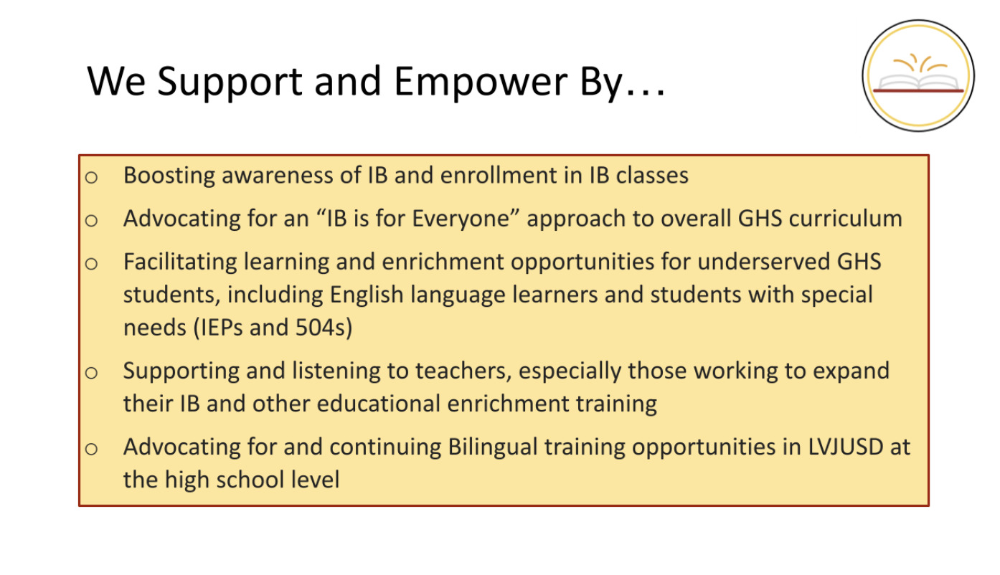

GET TO KNOW US
About Granada EEF
Learn more about who we are and what we do.
In March 2023, the Livermore community learned that the IB program at Granada was being discontinued. Students, families, teachers, community leaders and businesses grouped together to find a way forward for alternative education in our schools. They channeled their shock and anger into action by packing the school board meeting to speak out. About 60 people addressed the school board trustees, letting them know the impact IB education has and correcting misunderstandings and errors. The district reversed the decision and the IB program was reinstated.
The group of supporters continued meeting over the next several months and considered how to help at Granada.We now recognized the need for ongoing support and information about the IB program. However, other populations at Granada also lacked targeted support, such as students learning English or wanting to continue dual immersion courses, students with special needs (those with 504 plans and IEPs), and teachers. We decided to form an organization to support these core academic issues.
The Granada EEF began in July 2023. Parents and teachers came together to create this new non-profit organization, with the support and cooperation of students, administrators, and school board trustees. Throughout the first year, we worked with GHS, the district office, the school board, other local organizations, and Livermore families. We listen to people’s concerns, spread information, and create community.
In 2024 we received confirmation of our non-profit status from the state. We hope you will join us in the future as we continue to expand the EEF and help our Livermore students reach their potential!
What we stand by:
